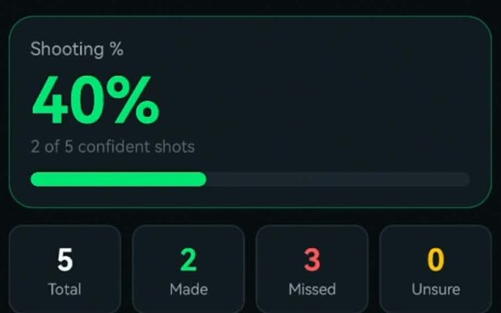
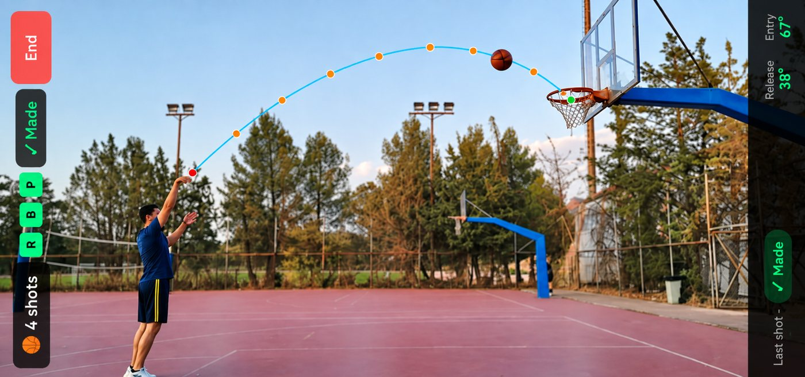
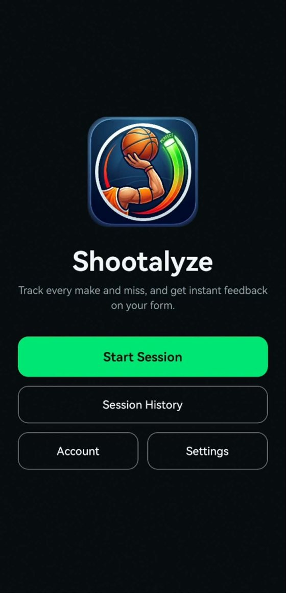
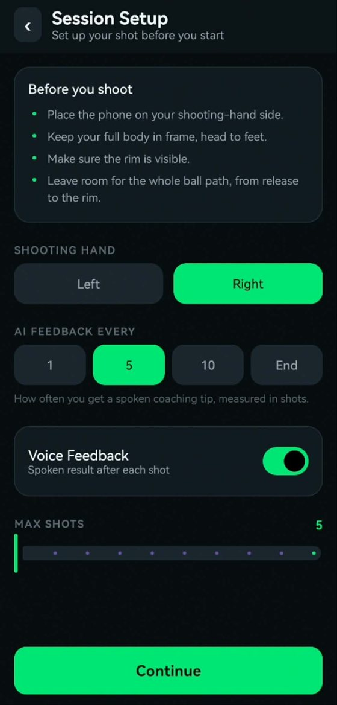
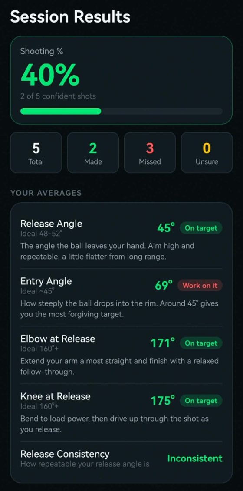
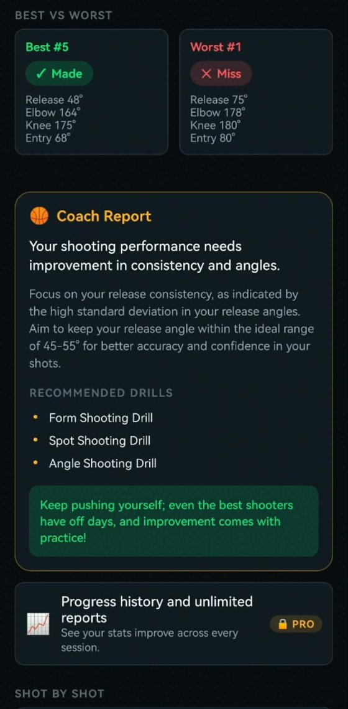
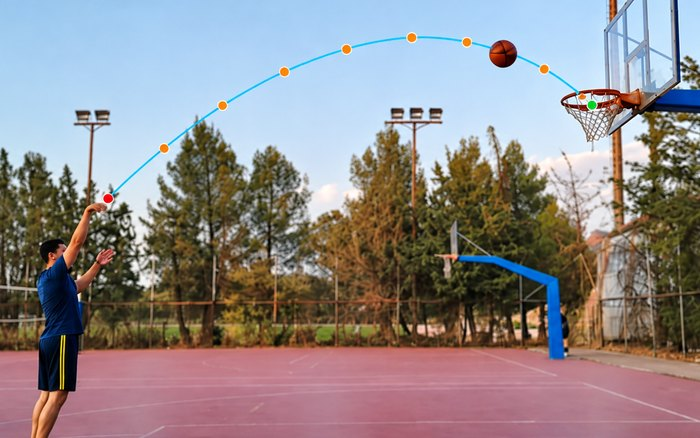
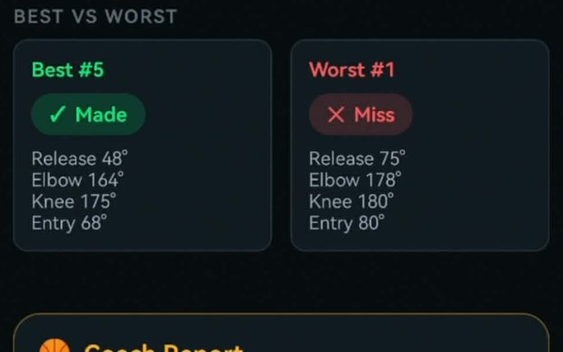
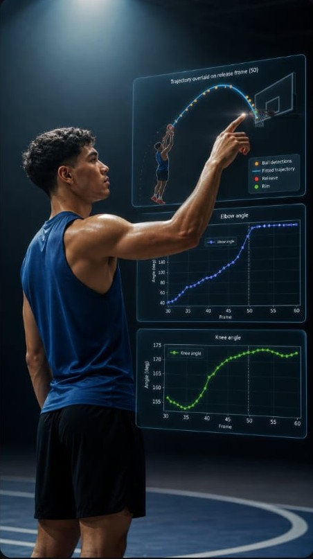

Young players building a shot
Mechanics set early and then stick. A session laid out end to end shows whether a change held for ten shots, or only for the one that felt good.
Film a session on your phone. Shootalyze measures every shot, speaks the result and the fix back to you while you are still shooting, and ends with the one change worth making.
Spoken feedback after every attempt, so you never stop to read a screen

The gap
You can watch the same clip twenty times and still be guessing. "Shoot it flatter" is an opinion. 57 degrees is a measurement.
The variables that decide a make from a miss are angles, and angles are exactly what the human eye is worst at judging at full speed.
Real pipeline output
Every number, chart and line of feedback below came out of the pipeline for one real shot. Nothing here is illustrative.


The target ranges beside each measurement come from published free-throw and jump-shot research. The optimum shifts with release height and shooting distance, which is why they are ranges. Where the numbers come from
On the phone
A mobile build is in testing. It works through a whole session rather than a single shot, calls each attempt as you take it, and ends with your averages and a written report.
Screenshots from the build in testing



Open it and go. Past sessions and their reports stay behind the same screen.

Where to stand the phone, which hand you shoot with, how often you want a spoken cue, and how many shots.

Shooting percentage, makes and misses, and your average angles each checked against a target range.

Best rep against worst, what to fix first, and the drills that follow from it.
Who it's for
No facility, no motion-capture rig, no staff analyst. A phone on the sideline covers all three of these.

Mechanics set early and then stick. A session laid out end to end shows whether a change held for ten shots, or only for the one that felt good.

No gym time, no booked court, no sensors to charge. This tracking was recorded outdoors on a public court with nothing but a phone.

A second set of eyes on every player. Put their best rep next to their worst with the numbers attached, and follow the trend across sessions instead of trusting memory.
When you get it
Most tools hand you something to read later, once the session is over and the feel has gone. Almost all of this reaches you while you can still act on it.
The result spoken after every attempt, and a coaching cue every shot, every fifth or every tenth, whichever you set. Made or miss and the last attempt's release and entry angle stay on the display if you want to glance down.
Spoken result · spoken cue · live count
Release, entry, elbow and knee averaged across the session and checked against the target range, with shooting percentage, a consistency read, and your best rep set against your worst.
5 angles · shooting % · best against worst
The measurements turned into plain language, ending in a single adjustment rather than a list, plus the drills that follow from it and the charts showing elbow and knee through the motion.
Written report · drills · joint charts
The difference
Filming yourself is not useless, it is just manual and after the fact. This is the same work done for you, while it still matters.
Free and Pro
Everything that analyses a session sits in the free tier. Pro is about keeping the history and going deeper, not about unlocking the basics.
Free
Working today in the build being tested
Pro planned
Being defined now, and nothing is priced yet
Pricing is not set. Early access goes out to the waitlist before anywhere else.
From the court
Nothing here yet, and we are not going to write it ourselves. The first testers are going out now. These three slots fill with their words.
Reserved for a player on seeing their own release angle measured for the first time.
Reserved for a coach on using the numbers alongside their own eye during a session.
Reserved for whoever finds the mechanical flaw nobody around them had spotted.
Want one of these slots? Join the waitlist.
FAQ
Release angle, entry angle, release height, elbow and knee angles across the motion, the isolated release frame, the plotted charts, and a written note.
No. A phone camera filming from the side is enough. No markers, no sensors, no calibration rig.
Not yet. The pipeline is working and a mobile version is in testing. Early access goes to the waitlist first.
Filming gives you a picture. This gives you numbers you can compare between reps, which is the only way to know whether a change actually worked.
It is built around the jump shot and free throw, filmed side on, with the full motion and the rim both in frame.
Early access goes out to the waitlist before anywhere else.
Get early access